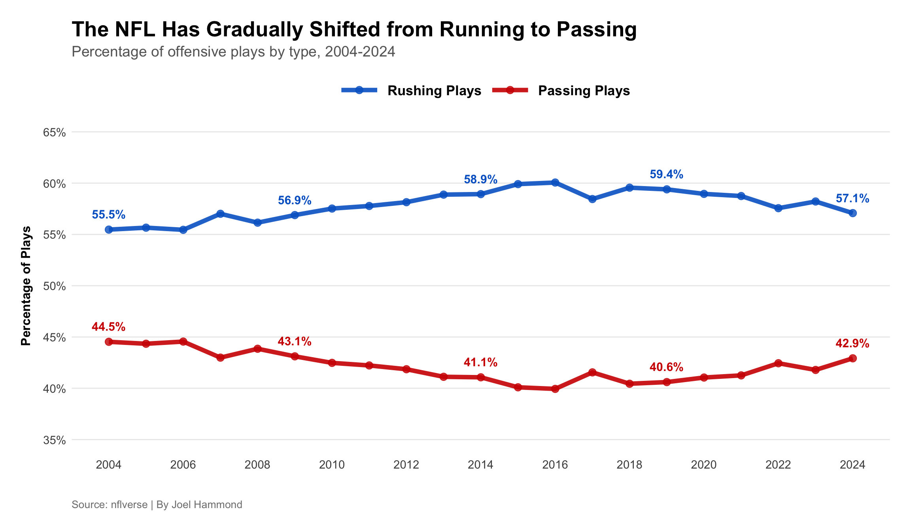
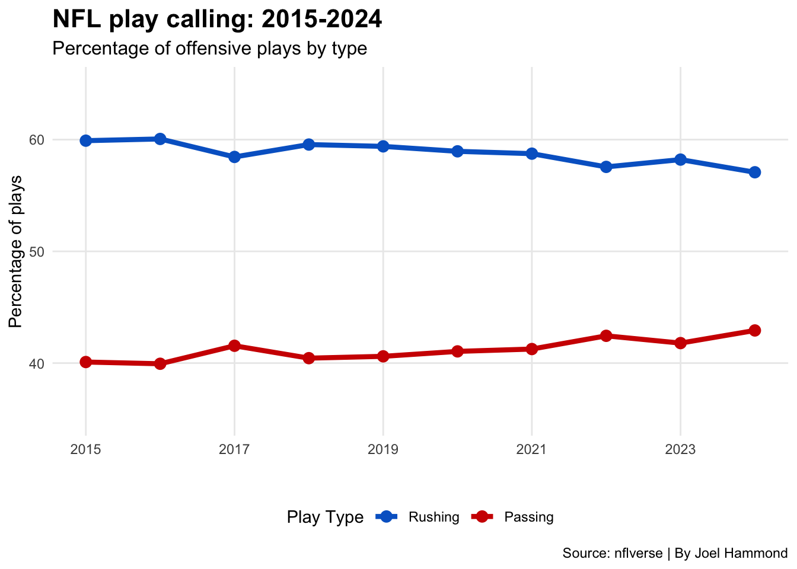
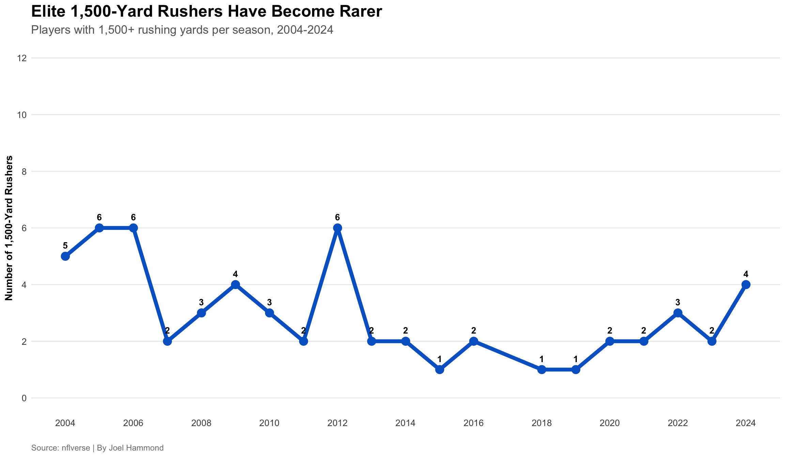

Code
library(tidyverse)
library(nflverse)
pbp_all <- load_pbp(2004:2024)Everyone says the NFL run game is dying. Analysts claim teams are passing more than ever. But what does the data actually show? I analyzed 20 years of NFL play-by-play data to find out, and the results might surprise you. I analyzed 20 years of NFL data (2004-2024) to find out if rushing is truly dying, or if it’s just evolving into something different.
library(tidyverse)
library(nflverse)
pbp_all <- load_pbp(2004:2024)Let’s look at how NFL offensive philosophy has changed over the past 20 years.
play_trends <- pbp_all |>
filter(!is.na(play_type), play_type %in% c("run", "pass")) |>
group_by(season, play_type) |>
summarise(plays = n(), .groups = "drop") |>
group_by(season) |>
mutate(pct = plays / sum(plays) * 100) |>
ungroup()
label_years <- c(2004, 2009, 2014, 2019, 2024)
play_trends_labeled <- play_trends |>
mutate(
label = if_else(season %in% label_years, paste0(round(pct, 1), "%"), "")
)
ggplot(play_trends, aes(x = season, y = pct, color = play_type, group = play_type)) +
geom_line(linewidth = 2, alpha = 0.9) +
geom_point(size = 3, alpha = 0.8) +
geom_text(
data = play_trends_labeled |> filter(label != ""),
aes(label = label),
vjust = -1.3,
size = 4,
fontface = "bold",
show.legend = FALSE
) +
scale_color_manual(
values = c("pass" = "#d00000", "run" = "#0066cc"),
labels = c("Rushing Plays", "Passing Plays")
) +
scale_y_continuous(
limits = c(35, 65),
breaks = seq(35, 65, 5),
labels = paste0(seq(35, 65, 5), "%")
) +
scale_x_continuous(
breaks = seq(2004, 2024, 2)
) +
labs(
title = "The NFL Has Gradually Shifted Back-and-Forth",
subtitle = "Percentage of offensive plays by type, 2004-2024",
x = "",
y = "Percentage of Plays",
color = "",
caption = "Source: nflverse | By Joel Hammond"
) +
theme_minimal() +
theme(
plot.title = element_text(size = 20, face = "bold", margin = margin(b = 5)),
plot.subtitle = element_text(size = 14, color = "gray40", margin = margin(b = 15)),
axis.title.y = element_text(size = 12, face = "bold", margin = margin(r = 10)),
axis.text = element_text(size = 11),
legend.position = "top",
legend.text = element_text(size = 13, face = "bold"),
legend.key.width = unit(1.5, "cm"),
panel.grid.minor = element_blank(),
panel.grid.major.x = element_blank(),
plot.caption = element_text(size = 10, color = "gray50", hjust = 0, margin = margin(t = 15)),
plot.margin = margin(20, 20, 20, 20)
)
What I find interesting about this is that it is actually the opposite of what people think. Passing and Rushing have stayed stagnant for at least 20 years. So even though the running game hasn’t declined, why do people think it has. I decided to dive deeper into
Has the number of elite running backs changed over the past 20 years?
player_rushing <- pbp_all |>
filter(play_type == "run", !is.na(rusher_player_name), !is.na(yards_gained)) |>
group_by(season, rusher_player_name) |>
summarise(
rushing_yards = sum(yards_gained, na.rm = TRUE),
.groups = "drop"
)
thousand_yard_rushers <- player_rushing |>
filter(rushing_yards >= 1000) |>
group_by(season) |>
summarise(
rushers_1000 = n(),
.groups = "drop"
)
ggplot(thousand_yard_rushers, aes(x = season, y = rushers_1000)) +
geom_line(linewidth = 2, color = "#d00000") +
geom_point(size = 4, color = "#d00000") +
geom_text(
aes(label = rushers_1000),
vjust = -1.2,
size = 3.5,
fontface = "bold"
) +
scale_x_continuous(breaks = seq(2004, 2024, 2)) +
scale_y_continuous(limits = c(0, 35), breaks = seq(0, 35, 5)) +
labs(
title = "The Number of 1,000-Yard Rushers Has Fluctuated Over Time",
subtitle = "Players with 1,000+ rushing yards per season, 2004-2024",
x = "",
y = "Number of 1,000-Yard Rushers",
caption = "Source: nflverse | By Joel Hammond"
) +
theme_minimal() +
theme(
plot.title = element_text(size = 18, face = "bold"),
plot.subtitle = element_text(size = 13, color = "gray40"),
axis.title = element_text(size = 11, face = "bold"),
axis.text = element_text(size = 10),
panel.grid.minor = element_blank(),
panel.grid.major.x = element_blank(),
plot.caption = element_text(size = 9, color = "gray50", hjust = 0)
)
fifteen_hundred_rushers <- player_rushing |>
filter(rushing_yards >= 1500) |>
group_by(season) |>
summarise(
rushers_1500 = n(),
.groups = "drop"
)
ggplot(fifteen_hundred_rushers, aes(x = season, y = rushers_1500)) +
geom_line(linewidth = 2, color = "#0066cc") +
geom_point(size = 4, color = "#0066cc") +
geom_text(
aes(label = rushers_1500),
vjust = -1.2,
size = 3.5,
fontface = "bold"
) +
scale_x_continuous(breaks = seq(2004, 2024, 2)) +
scale_y_continuous(limits = c(0, 12), breaks = seq(0, 12, 2)) +
labs(
title = "Elite 1,500-Yard Rushers Have Become Rarer",
subtitle = "Players with 1,500+ rushing yards per season, 2004-2024",
x = "",
y = "Number of 1,500-Yard Rushers",
caption = "Source: nflverse | By Joel Hammond"
) +
theme_minimal() +
theme(
plot.title = element_text(size = 18, face = "bold"),
plot.subtitle = element_text(size = 13, color = "gray40"),
axis.title = element_text(size = 11, face = "bold"),
axis.text = element_text(size = 10),
panel.grid.minor = element_blank(),
panel.grid.major.x = element_blank(),
plot.caption = element_text(size = 9, color = "gray50", hjust = 0)
)
Looking at elite running back production, the data reveals something unexpected. From 2004 to 2010, the league averaged around 19 players with 1,000 rushing yards per season. But from 2011 to 2020, that number crashed and hit a low of just 8 in 2015. Elite 1,500-yard rushers became even rarer, dropping from 5-6 per year in the mid-2000s to just 1-2 in most recent seasons. However, since 2021, we’re seeing a rebound with 1700-1800 yard rushers returning. This suggests teams moved toward running back committees in the 2010s, spreading carries among multiple backs rather than feeding one workhorse. But here’s the real question: does any of this actually matter for winning games? If teams are running more now than they did 20 years ago, does that translate to more wins? Let’s find out.
team_rush_pct_all <- pbp_all |>
filter(!is.na(posteam), play_type %in% c("run", "pass")) |>
group_by(season, posteam) |>
summarise(
rush_plays = sum(play_type == "run"),
total_plays = n(),
rush_pct = (rush_plays / total_plays) * 100,
.groups = "drop"
)
schedules_all <- load_schedules(2004:2024)
team_wins_all <- schedules_all |>
mutate(
home_win = if_else(home_score > away_score, 1, 0),
away_win = if_else(away_score > home_score, 1, 0)
) |>
pivot_longer(
cols = c(home_team, away_team),
names_to = "home_away",
values_to = "team"
) |>
mutate(
win = if_else(home_away == "home_team", home_win, away_win)
) |>
group_by(season, team) |>
summarise(
wins = sum(win, na.rm = TRUE),
.groups = "drop"
)
team_full_all <- team_rush_pct_all |>
left_join(team_wins_all, by = c("season" = "season", "posteam" = "team"))
overall_corr <- cor(team_full_all$rush_pct, team_full_all$wins, use = "complete.obs")
ggplot(team_full_all, aes(x = rush_pct, y = wins)) +
geom_point(alpha = 0.4, size = 2, color = "#d00000") +
geom_smooth(method = "lm", se = TRUE, color = "#0066cc", linewidth = 2) +
scale_y_continuous(limits = c(0, 17), breaks = seq(0, 17, 2)) +
scale_x_continuous(limits = c(30, 60)) +
labs(
title = "Running More Doesn't Guarantee More Wins",
subtitle = paste0("All NFL teams, 2004-2024 seasons | Correlation: ", round(overall_corr, 3)),
x = "Rush Percentage (% of plays that are rushes)",
y = "Wins",
caption = "Source: nflverse | By Joel Hammond"
) +
theme_minimal() +
theme(
plot.title = element_text(size = 20, face = "bold"),
plot.subtitle = element_text(size = 14, color = "gray40"),
axis.title = element_text(size = 12, face = "bold"),
axis.text = element_text(size = 11),
panel.grid.minor = element_blank(),
plot.caption = element_text(size = 10, color = "gray50", hjust = 0)
)
The scatter plot reveals that rushing percentage has only a weak correlation (0.269) with winning. While there’s a slight upward trend, the massive spread of dots shows teams can win with any rushing attack. Some teams run 50%+ of the time and barely win 4 games. Others run less than 40% and win 14+ games. The data is clear, it’s not about running more, it’s about evolving and using the best strategy. So, is the NFL run game dying? Absolutely not. The data tells a story that contradicts the popular narrative. Despite what you hear from analysts and fans, teams are actually running the ball more than they did 20 years ago. The so called “death” of the run game never happened. What did happen was an evolution. The mid-2010s saw a dramatic shift toward running back committees, with elite 1,000-yard rushers dropping from 24 in 2006 to just 8 in 2015. Teams experimented with spreading carries among multiple backs rather than feeding a single workhorse. But since 2021, we’ve seen a return to feature backs. The other revealing finding is that running the ball more doesn’t have any correlation to winning more. This proves that it isn’t about volume, it’s about execution. Some of the league’s best teams run heavily. Others win by airing it out. What matters isn’t your philosophy, but how well you execute it.The NFL run game didn’t die. It adapted, evolved, and found its place in modern football. And the data proves it’s here to stay.